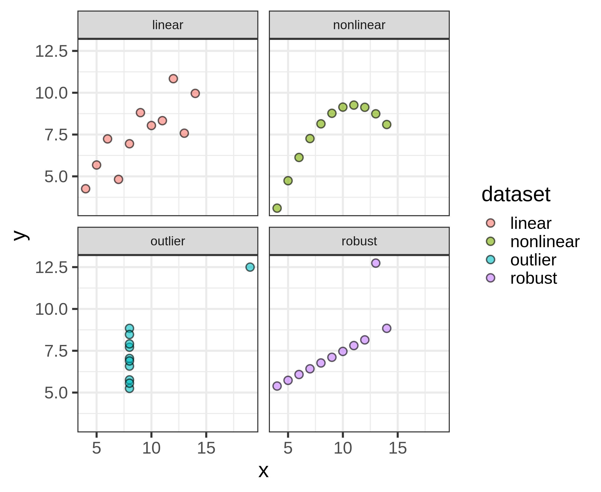
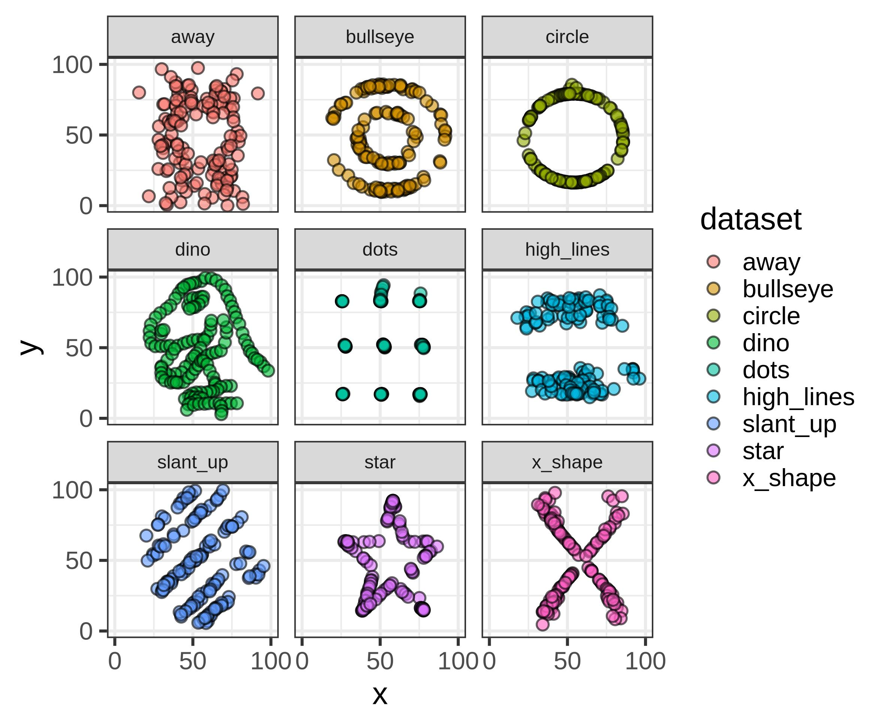
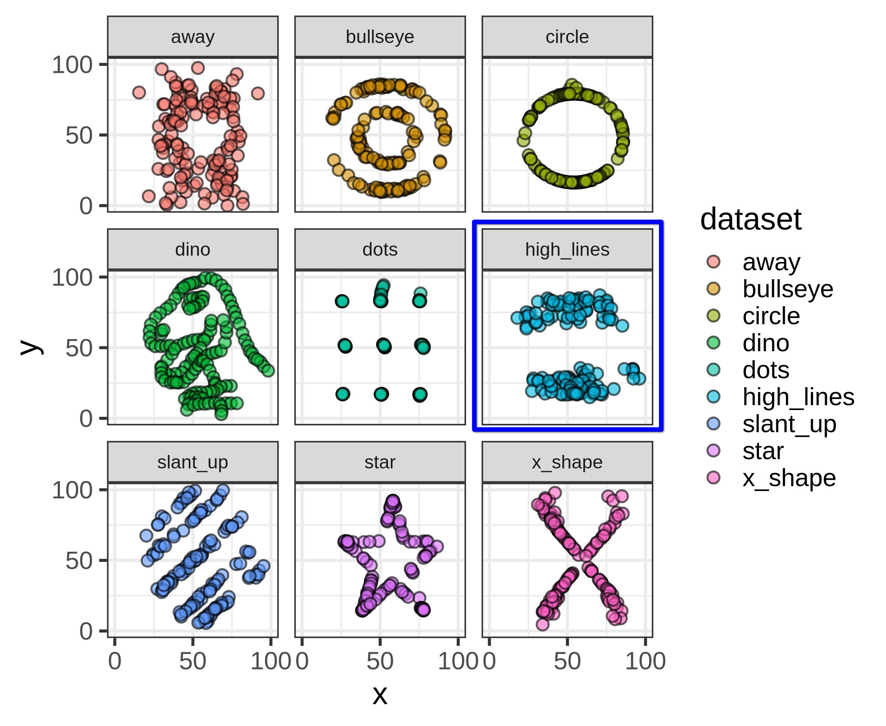
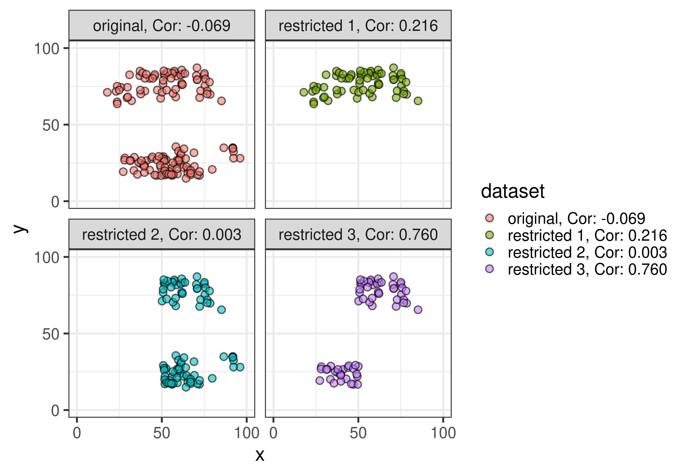
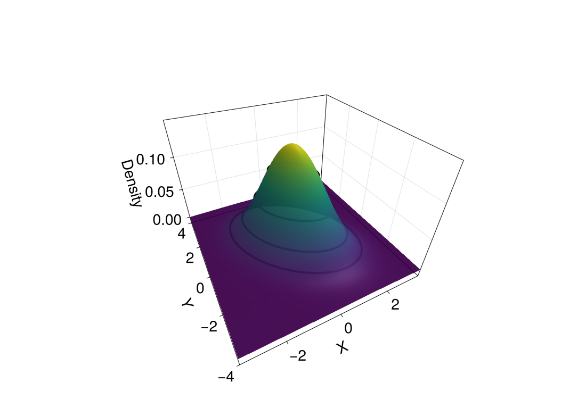
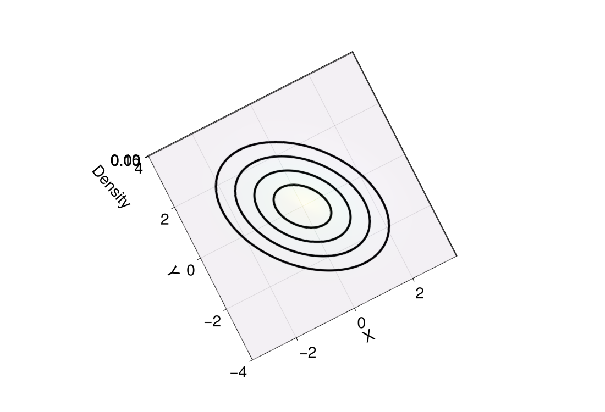

Bivariate Descriptive Statistics & Probability Distributions
Lecture 3 - LAS
Don van den Bergh
07-09-2026
Today
Bivariate Descriptive Statistics
What is “Bivariate”?
Looking at two variables at the same time.
Yes, there is also “trivariate” and more generally, “multivariate”.
Bivariate Descriptive Statistics
- Contingency tables (we talked about these last week)
- Covariance
- Correlation
Dataset: World Data
Source: Data from world bank via https://www.gapminder.org/data, CC-BY license
Dataset: World Data
- Child mortality: Probability of dying between age 0 - 5 per 1000 babies (percentage).
- Fertility: This is the number of children that would be born to a woman if she were to live to the end of her childbearing years and bear children in accordance with age-specific fertility rates of the specified year.
- CO2_PCAP: CO2 emissions per capita.
- GDP_PCAP: GDP per capita.
- Life Expectancy: No. years a newborn would live at current mortality rates.
- Daily income: The mean daily household per capita income in 2021 PPP (constant international dollars).
Fertility vs. Life expectancy

Last Week: Sum of Squared Distances \(SS_x\)
\[ SS_x = \sum_{i=1}^{n}(x_i - \bar{x})^2 = \sum_{i=1}^{n}(x_i - \bar{x})(x_i - \bar{x}) \]
One variable: \(\mathrm{deviation} \times \mathrm{deviation} = \mathrm{Variance}\)
Two variables: \(x-\mathrm{deviation} \times y-\mathrm{deviation} = \mathrm{Covariance}\)
Covariance: Sum of Products
\[ SP_{xy} = \sum_{i=1}^n \bigl(x_i - \bar{x}\bigr)\bigl(y_i - \bar{y}\bigr) \]
Definitions:
- \(x\) and \(y\): the two variables we’re interested in.
- \(\bar{x}\): the sample mean of the variable \(x\).
- \(x_i\): the \(i\)th observation of the variable.
- \(n\) the sample size.
- \(\sum_{i=1}^{n}\): the sum from \(i\) is 1 to \(i\) is \(n\).
- \(SP_{xy}\) the sum of products between \(x\) and \(y\).
Covariance: Sum of Products
\(\overline{\text{Life Expectancy}}\) = 72.8, \(\overline{\text{Fertility}}\) = 2.5,
Covariance: Sum of Products
\(SP_{xy}\) = -1326. What does this mean?

Covariance
\[ S_{xy} = \frac{\sum_{i=1}^n \bigl(x_i - \bar{x}\bigr)\bigl(y_i - \bar{y}\bigr)}{n} = \frac{SP_{xy}}{n} \]
Definitions:
- \(x\) and \(y\): the two variables we’re interested in.
- \(\bar{x}\): the sample mean of the variable \(x\).
- \(x_i\): the \(i\)th observation of the variable.
- \(n\) the sample size.
- \(\sum_{i=1}^{n}\): the sum from \(i\) is 1 to \(i\) is \(n\).
- \(SP_{xy}\) the sum of products between \(x\) and \(y\).
\(S_{xy}\) = -6.84.
Correlation: Standardized Covariance
\[ r_{xy} = \frac{\sum_{i=1}^n \bigl(x_i - \bar{x}\bigr)\bigl(y_i - \bar{y}\bigr)}{ns_xs_y} = \frac{SP_{xy}}{ns_xs_y} = \frac{S_{xy}}{s_xs_y} \]
Definitions:
- \(x\) and \(y\): the two variables we’re interested in.
- \(\bar{x}\): the sample mean of the variable \(x\).
- \(x_i\): the \(i\)th observation of the variable.
- \(n\) the sample size.
- \(\sum_{i=1}^{n}\): the sum from \(i\) is 1 to \(i\) is \(n\).
- \(SP_{xy}\): the sum of products between \(x\) and \(y\).
- \(s_x\): the sample standard deviation of \(x\)
\(r_{xy}\) = -0.791.
Correlation: Standardized Covariance
Recall \(Z\)-scores, \(Z_{x_i} = \frac{x_i-\bar{x}}{s_x}\) and \(Z_{y_i} = \frac{y_i-\bar{y}}{s_y}\)
\[ \begin{align} r_{xy} &= \frac{\sum_{i=1}^n \bigl(x_i - \bar{x}\bigr)\bigl(y_i - \bar{y}\bigr)}{ns_xs_y} \\ r_{xy} &= \frac{1}{n}\sum_{i=1}^n \frac{\bigl(x_i - \bar{x}\bigr)}{s_x}\frac{\bigl(y_i - \bar{y}\bigr)}{s_y} \\ r_{xy} &= \frac{1}{n}\sum_{i=1}^n \underbrace{\frac{\bigl(x_i - \bar{x}\bigr)}{s_x}}_{Z_{x_i}} \underbrace{\frac{\bigl(y_i - \bar{y}\bigr)}{s_y}}_{Z_{y_i}} \\ r_{xy} &= \frac{1}{n}\sum_{i=1}^n Z_{x_i} Z_{y_i} \end{align} \]
Covariance Matrix
Correlation Matrix
Covariance vs. Correlation
Covariance
- \(-\infty < S_{xy} < \infty\)
- unit, \(\mathrm{unit}(x) \times \mathrm{unit}(y)\)
- covariance of \(x\) with \(x\) equals variance
- scales with linear transformation of the data (e.g., mm to cm)
- cannot be interpreted without knowing the variances
Correlation
- \(-1 \leq r_{xy} \leq 1\)
- no unit
- correlation of \(x\) with \(x\) equals \(1\)
- unaffected by changes of units (e.g., cm to mm)
- can be interpreted without knowing the variances
Limitations
- Throughout, we’re often looking at plots of the data
- The only thing that truly conveys all information in the data… are the data themselves
- Looking at raw numbers is typically not informative, hence we use plots
Anscombe’s Quartet

Source: Wikipedia
Anscombe’s Quartet
| dataset | mean_x | mean_y | sd_x | sd_y | cor |
|---|---|---|---|---|---|
| linear | 9 | 7.501 | 3.317 | 2.032 | 0.816 |
| nonlinear | 9 | 7.501 | 3.317 | 2.032 | 0.816 |
| outlier | 9 | 7.501 | 3.317 | 2.031 | 0.817 |
| robust | 9 | 7.500 | 3.317 | 2.030 | 0.816 |
Datasaurus Dozen

Datasaurus Dozen
| dataset | mean_x | mean_y | sd_x | sd_y | cor |
|---|---|---|---|---|---|
| away | 54.266 | 47.835 | 16.770 | 26.940 | -0.064 |
| bullseye | 54.269 | 47.831 | 16.769 | 26.936 | -0.069 |
| circle | 54.267 | 47.838 | 16.760 | 26.930 | -0.068 |
| dino | 54.263 | 47.832 | 16.765 | 26.935 | -0.064 |
| dots | 54.260 | 47.840 | 16.768 | 26.930 | -0.060 |
| high_lines | 54.269 | 47.835 | 16.767 | 26.940 | -0.069 |
| slant_up | 54.266 | 47.831 | 16.769 | 26.939 | -0.069 |
| star | 54.267 | 47.840 | 16.769 | 26.930 | -0.063 |
| x_shape | 54.260 | 47.840 | 16.770 | 26.930 | -0.066 |
Limitations (2)
Some limitations cannot be spotted by looking at a plot!
- Restricted range
- Causality
Restricted range

Restricted range

Causality
What do these correlations tell us about causality, i.e., which variable causes a change in another?
Nothing! Correlation does not imply causation!
Break
See you in ~10 minutes!
Transformations
Example: Wealth

What if the relation is not linear?
- Transformations
- Spearman rank correlation
- Kendall’s tau
Transformations
Transformations can make
- the data more normal
- relations more linear
which in turn makes statistics easier.
But, transformations also
- alter the meaning of the data
- are not guaranteed to make things better
Common transformations
Some we have already seen!
Converting raw to Z scores, is technically a transformation.
- Log, log10, reciprocal, exp, power, square root
Common transformations

Example: Wealth

Example: Wealth

Example: Wealth

Spearman rank correlation
Pearson correlation between the rank values of those two variables
Example: Wealth
- Pearson Correlation: 0.517
- Spearman rank Correlation: 0.83
- Kendall’s Tau: 0.638

Example: Wealth
- Pearson Correlation: 0.817
- Spearman rank Correlation: 0.83
- Kendall’s Tau: 0.638

Sample statistics and Population Estimators
- Sample statistics describe the sample.
- What we want to describe is the population.
- For this reason, sample statistics are often “adjusted”:
Sample
- Variance divides by \(n\)
- Covariance divides by \(n\)
Estimator
- Variance divides by \(n - 1\)
- Covariance divides by \(n - 1\)
Intuition: We “used” one observation to compute the sample mean and thus divide by \(n - 1\).
Note:
- Variance and covariance change when we use \(n-1\) to estimate population quantities
- Correlation does not change, because the denominator cancels.
Drawbacks of Descriptive Statistics
At its core, statistics tries to reduce the information in the full dataset into something smaller
- (+) This makes it possible to understand large datasets
- (-) This loses information along the way
Example: IF the data are normally distributed then the mean and variance describe the entire distribution.
Bivariate Distributions
Normal distribution
Last Week: Sample mean and SD correspond to the population model \(N(\mu_x, \sigma_x)\)
Now: two sample means, \(\bar{x},\bar{y}\), two SDs, \(s_x,s_y\), a correlation \(r_{xy}\) correspond to a bivariate normal model:
\[ X, Y \sim N(\underbrace{\mu_x, \mu_y}_{\text{mean}}, \underbrace{\sigma_x, \sigma_y, \rho}_{\text{covariance}}) \]
The bivariate normal distribution has five parameters:
\[ \begin{align} \mu_x &:\text{mean of X}\quad &&\sigma_x :\text{sd of X}\\ \mu_y &:\text{mean of Y}\quad &&\sigma_y :\text{sd of Y}\\ & \quad&&\rho :\text{correlation} \end{align} \]
These are the same picture


Bivariate Normal distribution
Continuous Distributions
Last week we examined discrete probability distributions:
- joint, marginal, and conditional.
For continuous probability distributions the exact counterparts exist.
Marginal Distribution
If we ignore \(Y\), or have not observed it, what is the distribution of \(X\)?
Conveniently, if
\[ X, Y \sim N(\underbrace{\mu_x, \mu_y}_{\text{mean}}, \underbrace{\sigma_x, \sigma_y, \rho}_{\text{(Co)Variance}}) \]
then the marginal distributions are \[ X \sim N(\mu_x, \sigma_x), \quad Y \sim N(\mu_y, \sigma_y) \]
Conditional Distribution
What if we do know \(Y\)?
Conditional Distribution
Conditional Distribution
If \(\rho = 0\) then knowing Y does not tell us anything about X.
They are independent.
Independence: knowing the outcome or value of one variable or event provides no information about the probability or outcome of another.
This is a special property of the bivariate normal distribution, it does not hold in general that \(\rho = 0\) (or \(r = 0\)) implies independence.
Multivariate Normal distribution
For \(p\) variables we have: \[ \mathbf{\mu} = \begin{bmatrix} \mu_1 \\ \mu_2 \\ \mu_3 \\ \vdots \\ \mu_p \end{bmatrix}\quad \mathbf{\Sigma} = \begin{bmatrix} \sigma_1^2 & \sigma_1\sigma_2\rho_{12} &\sigma_1\sigma_3\rho_{13} &\cdots &\sigma_1\sigma_p\rho_{1p}\\ \sigma_2\sigma_1\rho_{21} & \sigma_2^2 &\sigma_2\sigma_3\rho_{23} &\cdots &\sigma_2\sigma_p\rho_{2p}\\ \sigma_3\sigma_1\rho_{31} & \sigma_3\sigma_2\rho_{32} & \sigma_3^2 &\cdots &\sigma_3\sigma_p\rho_{3p}\\ \vdots & \vdots & \vdots &\ddots &\vdots \\ \sigma_p\sigma_1\rho_{p1} & \sigma_p\sigma_2\rho_{p2} & \sigma_p\sigma_3\rho_{p3} &\cdots &\sigma_p^2 \end{bmatrix} \]
- No more picture
- If \(\rho_{ij} = 0\) then variables \(i\) and \(j\) are independent
Summary
- Covariance and correlation summarize the association between two variables.
- Transformations and rank correlations may help when the relation is nonlinear.
- The bivariate normal distribution describes the joint, marginal, conditional distributions and independence.